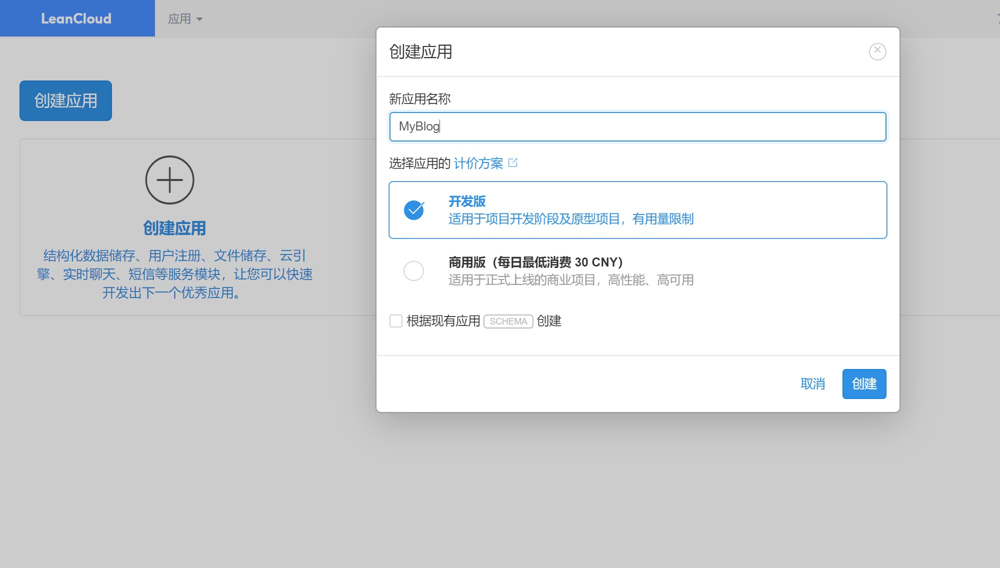

title: hexo博客增加评论留言功能date: 2020-03-19 11:08:29tags: blogcategories: blog
最近用hexo搭建了一个博客，这是一个用来生成静态博客的开源框架，要想开启评论功能，我们在这里借助后端云平台LeanCloud
nexT主题集成了很多评论插件，这里采用Valine

* 搜索valine * 将enable设置为true * 将获取的id填入相应的位置